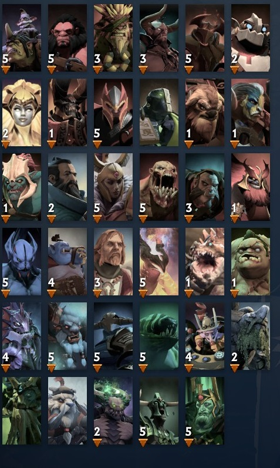

Сила визначає міцність та витривалість героя. Сила також визначає максимальну кількість здоров'я та швидкість його відновлення. Героїв з основним атрибутом «сила» складніше вбити, ніж інших, і найчастіше вони беруть на себе роль Ініціація та Стійкість, перші вступають у бій і приймають на себе більшу частину збитків від атак ворогів. Кожне очко атрибут сили сили збільшує: Здоров'я на 22 роки. Поновлення здоров'я на 0,1. Героям сили кожне очко сили також збільшує основну шкоду від атаки на 1. Наприклад :
